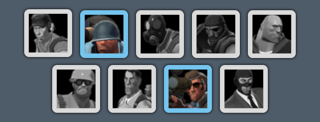

Suitcase
An iOS inventory viewer for Steam games
All games…
Supports all games that provide inventory information via Steam's Web API. Currently these are the following games:
- Counter-Strike: Global Offensive
- Dota 2
- Portal 2
- Team Fortress 2
… all items…

Get a quick overview about all items in an inventory. All items will be displayed with their name and an icon as known from the games.
Additionally, you can see the quality of an item with a quick glance at the (optional) colored halo around its icon.2
Sort items by:
- Position in the inventory
- Item name
- Type of the item
- Origin
- Item quality
… all information



Get detailed information on every aspect of an item. See which type an item is and where it wasa obtained from, read its full description and all of its attributes.
Additionally, you will find the following useful information:
-
Item sets
See which item set, if any, an item belongs to.
-
“Kill eater” ranks
Some items have a rank that increases with kills or other actions completed with this item.
-
Equipped items2
Which class can equip an item? And which one actually has it equipped at the moment?